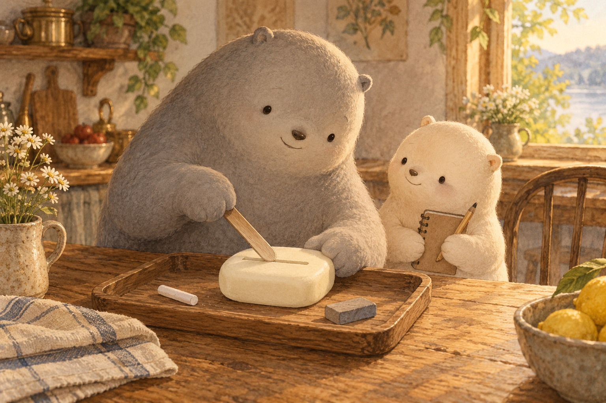
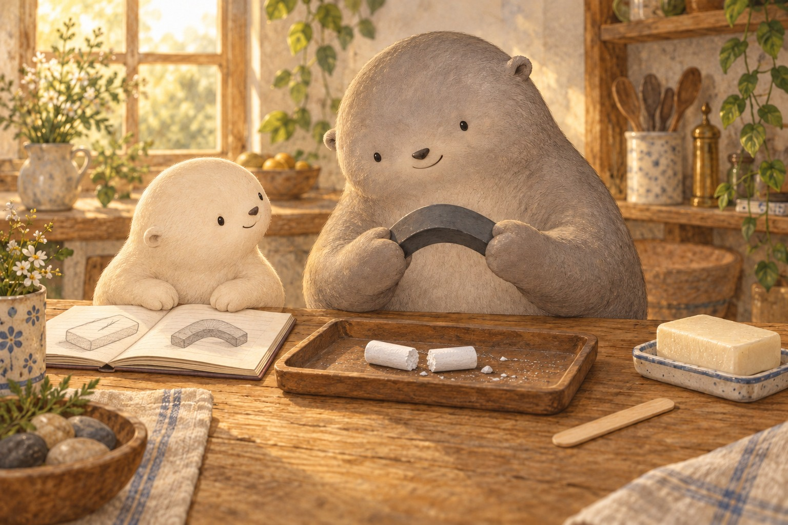
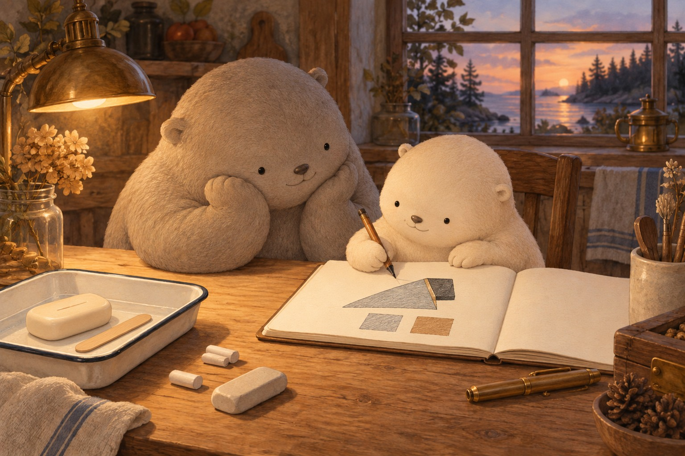
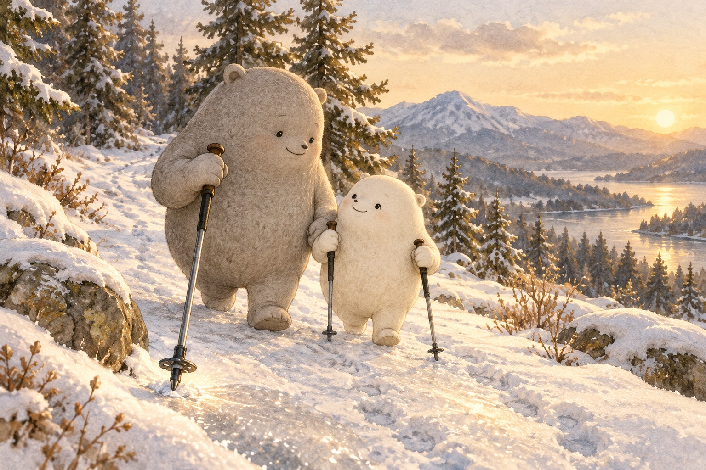

Many ballpoint pens have a tiny tungsten-carbide ball.
What is hiding at the end of a pen?
Look for the tiny round ball where ink meets paper.
A little explanation & something to try
The tiny ball in many ballpoint pens is tungsten carbide. It rolls ink onto paper and resists wear. People make this material by joining tungsten with carbon, then pressing powder and heating it very hot. This heating step is called sintering. Usually, a little cobalt metal binds the grains together: cemented carbide.
Try this. Trace the rolling ball in the picture, then point to the line it leaves.

A harder object can leave a scratch in a softer one.
What can a scratch tell us?
Big moves the craft stick across soap on a tray. Little watches and records.
A little explanation & something to try
A harder thing can scratch a softer thing. Hard means resisting scratches and dents. Tungsten carbide is one of the hardest materials people make. It is also heavy for its size. The soap test lets Little see a surface give way.
Try this. Predict what mark Big’s craft stick will leave in the soap. Record what you notice.

Chalk can snap. A rubber eraser can bend back.
Does hard always mean tough?
Compare the chalk pieces with the eraser bending in Big’s hands.
A little explanation & something to try
Tough means resisting cracks or breaks when bumped, bent or dropped. Hard and tough are different. Chalk is brittle: it snaps when bent. An eraser is tough: it bends back. Tungsten carbide is very hard but less tough than steel. It is brittle enough to chip if knocked hard.
Try this. Say which test gives a clue about a surface, and which gives a clue about breaking.

Choose a material for the job it needs to do.
Why give a hard tip a tough body?
Little’s sketch joins a small tip to a larger body.
A little explanation & something to try
Engineers often join a carbide tip to a tougher steel body, as on saw teeth and some masonry drill bits. The tip resists wear while the steel takes bumps. Carbide also appears in some ski-pole and hiking-pole tips and ice-grip studs. Choose a material for its job: hard, tough, or both.
Try this. Choose a job for the tip, then a job for the body.
A little book of very hard things
Tungsten Carbide
A small tip, a big question
A gray tip rested on a cloth. “Could that little piece do a big job?” asked Little Wonderer. “It is tungsten carbide,” said Big. “A material is what something is made of. This one is heavy for its size and very hard. But being hard does not mean it can never break.”
What might hard tell us about this little tip?
The ball inside a pen
Little found another clue in a pen. Many ballpoint pens have a tiny tungsten-carbide ball that rolls ink onto paper. People make carbide by joining tungsten, a metal, with carbon. They press the powder and heat it very hot. A little cobalt metal usually holds the grains together, like glue.
Why could a pen ball need to resist wear?
A line in the soap
Big set soap and a wooden craft stick on a tray. Little guessed what would happen, then watched. Big gently drew the stick across the soap. A scratch appeared: a small line dug into the surface. Hard means resisting scratches and dents. The soap gave way to the harder stick.
What did the scratch show about the soap?
A bend and a break
Does every material bend before it breaks? Big gently bent chalk over the tray. It snapped: chalk is brittle. A rubber eraser bent and came back: it is tough. Tough means resisting cracks and breaks from bumps or bends. Tungsten carbide is very hard, but brittle, so a strong knock can chip it.
How are resisting scratches and resisting breaks different?

A little grip in the snow
On a snowy walk, Little noticed the tips of their hiking poles. The tip is the small end that meets the ground. Some pole tips and ice-grip studs use carbide to bite into ice. “The hard part is only a tiny piece!” Little said. “Just where it is useful,” said Big.
Why put carbide just at a pole’s tip?
Hard, tough, or both
Back at the notebook, Big showed a saw-tooth picture. A small carbide tip joined a steel body. The hard tip resists wear; the tougher steel takes bumps without cracking as easily. “Two materials, two jobs,” Little said. “Do I need it hard, tough, or both?”
For a complete still story, download the foldable book.
Patterns at the workbench
Count by 2, 5 or 10. Find the same-sized step in each pattern.
Choose a material for the job it needs to do.
Choose a pattern and say its step. How could you check a missing count?
1. Little counts pens with tiny balls in pairs. What count comes next?
2, 4, 6, ___
A small hint
Count on by 2 from the number before the blank.
2. A closed drill-bit case has slots grouped in fives. What slot count comes next?
5, 10, 15, ___
A small hint
Count on by 5 from the number before the blank.
3. Little counts drawn saw teeth in tens. What count comes next?
10, 20, 30, ___
A small hint
Count on by 10 from the number before the blank.
4. Little counts pole marks along a snowy path in twos. What count is missing?
12, ___, 16, 18
A small hint
Count on by 2 from the number before the blank.
5. Little groups scratch-test notes in fives. What count is missing?
20, 25, ___, 35
A small hint
Count on by 5 from the number before the blank.
6. A workshop notebook counts packed pens in tens. What count is missing?
60, ___, 80, 90
A small hint
Count on by 10 from the number before the blank.
Give the test its words
Write one command about the soap test. Say it first if you like.
A harder object can leave a scratch in a softer one.
Ask Big to …name one gentle step with the soap and craft stick
Chalk can snap. A rubber eraser can bend back.
Watch the …tell what to notice while Big leads the test
Choose a material for the job it needs to do.
Record the …tell what mark to save in the notebook
Draw the scratch Big made in the soap. Add a label.
SAY IT FIRST. THEN DRAW OR WRITE.
A temporary space. Copy your words before closing or reloading; they are not saved or sent.
askwatchrecordsoapscratchcraft stickhardtough
Does your sentence tell what to do? Keep one clear command.
The hard-and-tough test bench
Two materials. Two jobs.
Tougher steel body Takes bumps and supports the tip.
Small hard carbide tip Resists wear where it does the work.
The tip is brazed on: a thin joining metal holds it to the steel. Do you need a material hard, tough, or both?
Tell it with words, pointing or a sketch. You can stop here.
A test bench in words
Predict. Will a material resist a scratch, a bump, or both?
Arrange. Choose tungsten carbide, steel, chalk or a rubber eraser. Choose scratch or bump.
Activate. A light carbide-point contact leaves carbide smooth, scratches steel and grooves chalk or rubber. A strong bump can chip carbide, dent steel, snap chalk or squash rubber that bounces back.
Notice. Hard resists scratches and dents. Tough resists cracks and breaks. A hard carbide tip on a tougher steel body gives each material a job.
Tell which change gives a clue about hard and which gives a clue about tough.
A soap test to watch at home
A grown-up leads every step; you predict, watch and record. Work over a tray and keep faces back.
Ask the grown-up to hold a soap bar and gently drag a smooth wooden craft stick across it. Predict first, then record the mark.
For a separate bending check, the grown-up gently bends chalk over the tray, then a flexible rubber eraser. Stop if extra force is needed. Record which snaps and which bends back.
Use only these soft household items. Keep crumbs on the tray. Leave pen tips, carbide and real tools out of the test.
Quiz
Answer key
Quiz 1
Hard means resisting scratches and dents. A very hard material can still chip or crack.
Quiz 2
Tough means resisting cracks or breaks from bumps, bends or drops. Tough and hard are different properties.
Quiz 3
The small carbide tip resists wear. The tougher steel body supports it and takes bumps without cracking as easily.
Quiz 4
Many ballpoint pens use a tiny tungsten-carbide ball at the tip. The hard ball rolls ink onto paper and resists wear.